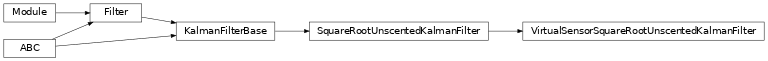

torchfilter.filters._virtual_sensor_filters
Private module; avoid importing from directly.
Module Contents
Classes
EIF variant with a virtual sensor model. |
|
EKF variant with a virtual sensor model. |
|
UKF variant with a virtual sensor model. |
|
Square-root UKF variant with a virtual sensor model. |
- class torchfilter.filters._virtual_sensor_filters.VirtualSensorExtendedInformationFilter(*, dynamics_model: DynamicsModel, virtual_sensor_model: VirtualSensorModel)[source]
Bases:
torchfilter.filters,torchfilter.filters.ExtendedInformationFilterEIF variant with a virtual sensor model.
Assumes measurement model is identity.
- class torchfilter.filters._virtual_sensor_filters.VirtualSensorExtendedKalmanFilter(*, dynamics_model: DynamicsModel, virtual_sensor_model: VirtualSensorModel)[source]
Bases:
torchfilter.filters,torchfilter.filters.ExtendedKalmanFilter
EKF variant with a virtual sensor model.
Assumes measurement model is identity.
- class torchfilter.filters._virtual_sensor_filters.VirtualSensorUnscentedKalmanFilter(*, dynamics_model: DynamicsModel, virtual_sensor_model: VirtualSensorModel, sigma_point_strategy: utils.SigmaPointStrategy | None = None)[source]
Bases:
torchfilter.filters,torchfilter.filters.UnscentedKalmanFilter
UKF variant with a virtual sensor model.
Assumes measurement model is identity.
- class torchfilter.filters._virtual_sensor_filters.VirtualSensorSquareRootUnscentedKalmanFilter(*, dynamics_model: DynamicsModel, virtual_sensor_model: VirtualSensorModel, sigma_point_strategy: utils.SigmaPointStrategy | None = None)[source]
Bases:
torchfilter.filters,torchfilter.filters.SquareRootUnscentedKalmanFilterSquare-root UKF variant with a virtual sensor model.
Assumes measurement model is identity.